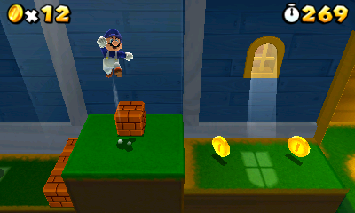
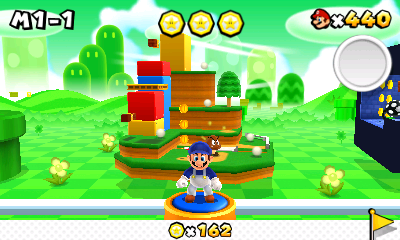
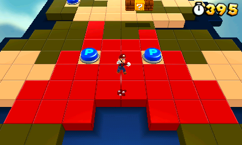
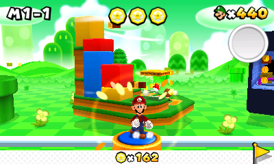
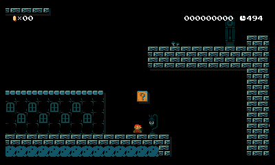
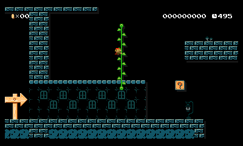

Since: 01-14-18
|
|
|
Preview
|

| General information | |
|---|---|
| Name | eros744 |
| User ID | 144008840 |
| Groups | Normal users |
| Total posts | 21 (0.02 per day) (last post 705 days ago in All Star in Super Mario Maker's editor style (Request a project!)) |
| Registered on | 01-14-18, 07:38 pm (1050 days ago) |
| Last view | 01-05-20, 11:45 am (329 days ago) at: /thread/673446124-super-mario-bros-special-mod-for-smm2 |
| Total stars received | 0 |
| Total stars given | 0 |
| Presentation | |
|---|---|
| Theme | New Super Mario Bros. Castle Theme · By Dirbaio |
| Items per page | 20 posts, 50 threads |
| Layout | AcmlmBoard Layout |
| Language | es_ES |
| RPG Status |
|---|
 |
You need to be logged in to post profile comments here.
No comments.
| So, I just discovered that LuNiney (you probably already know him) has a music channel, and he made an All Star version of the overworld theme of the editor in Super Mario Maker, so I would like to know if it's possible to import it, with it's own different channels. (Sorry for my bad english :P) EDIT: Sorry, forgot to put the link to the video |
|
Posted on 12-25-18, 03:28 pm
in All Star in Super Mario Maker's editor style (rev. 1 by eros744 on 12-25-18, 03:31 pm) |
|---|
| Oh sorry, I didn't knew |
| Posted on 12-01-18, 01:06 pm in I have a problem with the forums theme |
|---|
| When the forums had the option to change the theme, I chose the NSMB castle one (like the NSMBHD one), but now it was removed, and I can't choose the new default one (I think there's a new one), I mean, I like this one, but now I want to see how it's the other one and I'm getting tired of the castle one. Can anyone help me? |
| Posted on 11-30-18, 08:09 pm in I have a problem with the forums theme |
|---|
| Granted, but they will make you pay for every executable file you want to open I wish Nintendo releases the cancelled version of SM64 2 |
| Posted on 11-16-18, 06:38 pm in game Corrupt-a-wish |
|---|
| Yes, It's the 3DS versión, anyway, I asked in discord and the Nintendo SDK is needed to import models (which is illegal, so now, I don't think there's any tool that can do that) |
| Posted on 09-09-18, 01:49 pm in impossible Importing a NSMBU Mario model |
|---|
| It's more of a random... meme thing or something like that. It makes marios eyes look like derpy (like the SMG4 videos for example) and replaces some of the NSMBU tiles with the SMB ones as well as the SMB ones with the NSMBU ones. Installation instructions: If you want to disable a mod To enable Luma game patching (if you didn't already) Some screenshots:   |
| Posted on 09-01-18, 06:57 pm in 3ds Random Mario Maker Modpack |
|---|
| I made a mod of the Mario model, but with a Duck float (I'm not english so I don't know really how to call it, so I used a dictionary) and exported it to a .dae file, I tried ohana3ds to import it back, but it does give me an error, and SPICA doesn't even have an option to do that, so my question is, How can I import the model to the .BCH file, so I can import it again to the WU_Player_MarioMdl.szs file, and test if it works properly. EDIT: I used blender to edit the model. Thanks in advance! |
| Posted on 08-29-18, 05:03 pm in q&a Ask your SMM hacking questions here. |
|---|
| I just realized that I should ask the questions somewhere else, not in a new topic. But now, I don't know how to delete it. |
| Posted on 08-29-18, 04:57 pm in impossible Importing a NSMBU Mario model |
|---|
| So, I made a mod of the Mario model, but with a Duck float (I'm not english so I don't know really how to call it, so I used a dictionary) and exported it to a .dae file, I tried ohana3ds to import it back, but it does give me an error, and SPICA doesn't even have an option to do that, so my question is, How can I import the model to the .BCH file, so I can import it again to the WU_Player_MarioMdl.szs file, and test if it works properly. EDIT: I used blender to edit the model. |
| Posted on 08-28-18, 02:19 pm in impossible Importing a NSMBU Mario model |
|---|
| Are you going to make a 3DS version? |
| Posted on 08-13-18, 12:49 pm in SMB NES Color Scheme Mod |
|---|
| This is planned for version 2, I think it could be done soon Edit: (If I find it XD) |
|
Posted on 06-29-18, 09:27 am
in SMG4 and Red Luigi in SM3DL (rev. 1 by eros744 on 07-03-18, 06:31 pm) |
|---|
Do you have any screenshots for me? Sorry, I didn't had time to check the post, now the screenshots appear correctly and I have specified a little bit more about Luigi's new colors.Also, isn't SMG4 blue and not red? |
| Posted on 06-28-18, 01:13 pm in SMG4 and Red Luigi in SM3DL |
|---|
| You need to enable luma game pathing to use this!, unless you prefer to apply the patch in any another way. Just a little mod I made, I like SMG4 videos so I changed Mario's colors to blue and white; and also (and this has nothing to do with SMG4) I though that Luigi would look funny in red colors, (because is Mario's color scheme) so I changed it too (sorry if I say "I" too much). Sorry if Luigi colors look too dark, I tried to make them SM3DL styled, but as you can see, I didn't totally get it. (Also Mario was my favourite character, but I changed my mind years ago, so... That's also why I changed Luigi's textures to Mario's colors.     To install it you just only need to extract the files in the SD Card if you are using the EUR version, if you are using another version, change the name of the folder inside (the extracted luma folder\titles\0004000000053F00 (change this text to your title id for your region) |
|
Posted on 06-27-18, 03:54 pm
in SMG4 and Red Luigi in SM3DL (rev. 2 by eros744 on 06-28-18, 01:23 pm) |
|---|
| Looks amazing! Also, works on 3DS? |
| Posted on 06-27-18, 03:39 pm in SMB NES Color Scheme Mod |
|---|
| Ok, this is getting time-consuming, and sadly, I don't have too much time for personal things. So, I will still try to continue this, but if anyone of you wants to continue and make his own version of the next Ghost Marios, you have my permission (anyways you didn't need it, you could still do whatever you want). Anyway I am making now the SMB3 Ghost Mario, if everything goes as expected, you should have it for download later. Edit- My computer doesn't want to work correctly and doesnt open the image editor, sorry i'll try to fix it. |
|
Posted on 06-01-18, 03:47 pm
in 3dswip Ghost Mario (rev. 1 by eros744 on 06-01-18, 04:08 pm) |
|---|
Will you do SMW and SMB3? Yes! I will |
|
Posted on 04-08-18, 01:42 pm
in 3dswip Ghost Mario (rev. 1 by eros744 on 04-08-18, 01:43 pm) |
|---|
| It's possible to port it to the 3ds version? |
| Posted on 03-04-18, 05:01 pm in Luigi in Super Mario Maker! |
|---|
woah! cool! The attachment to the post ;)but, where's the download link? |
| Posted on 02-10-18, 11:28 pm in 3dswip Ghost Mario |
|---|
| This small mod changes SMB1 Mario to a ghost version of himself: Here are the screenshots:   |
|
Posted on 02-07-18, 06:40 pm
in 3dswip Ghost Mario (rev. 3 by eros744 on 04-06-18, 04:15 pm) |
|---|
| So recently I was trying to make SMM 3DS mods and I ended up with this. It changes the SMB1 field textures, it's not a big deal, but it is just a test mod, anyway. Here it is: https://drive.google.com/file/d/1XOMtGp5Yj5CpFk5Z6oYBkck6BKELHci9/view?usp=sharing Below I explain how to see a little easter egg I added: Have fun- Eruki733 aka eros744 |
| Posted on 01-14-18, 07:59 pm in smbfield3ds Alternative textures mod |
|---|